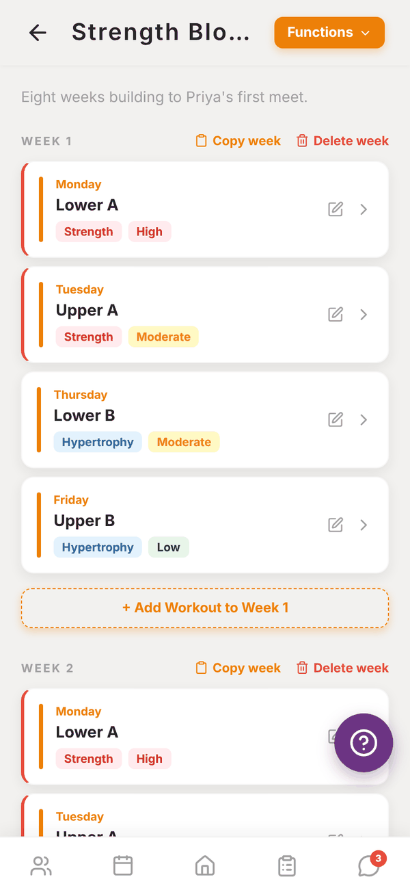
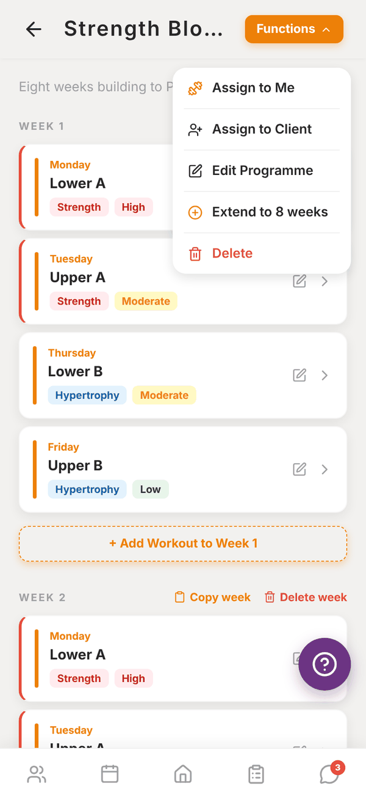
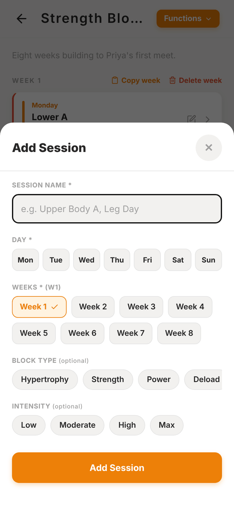
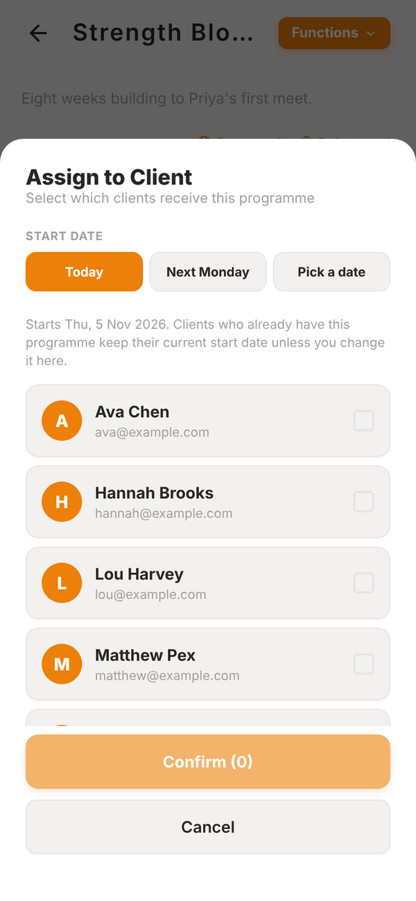

Totality for trainers
The programme builder
Add sessions to weeks and days, copy and delete weeks, extend a programme, assign it to clients or yourself.
Open a programme from My Programmes to build it. The builder shows the programme week by week. Each session card shows its day, name, block type and intensity.


Add a session#
- Tap + Add Workout to Week 1 under any week (or + Add Session on an empty programme).
- Give it a Session Name, for example "Upper Body A" or "Leg Day".
- Pick one or more Days (Mon to Sun).
- Pick one or more Weeks. The same session is created on every day and week you tick.
- Optional: a Block Type (Hypertrophy, Strength, Power, Deload, General) and Intensity (Low, Moderate, High, Max). They show as coloured tags.
- Tap Add Session.
Then tap the session to add exercises. See The session builder.

Edit or move a session#
Tap the pencil on a session card to open Edit Session. Change its name, block type or intensity, or tick other days and weeks. Ticking extra days copies the session there. Unticking the original day or week moves it. Delete Session removes it.
Copy or delete a week#
Each week header has two buttons:
- Copy week copies every session in that week, exercises included, into the weeks you pick.
- Delete week removes every session in that week.
A quick way to build an 8 week block: set up week 1 properly, then copy it into weeks 2 to 8 and adjust the loads.
The Functions menu#
Tap Functions at the top right:
- Assign to Me: put the programme on your own training. See My training.
- Assign to Client: see below.
- Edit Programme: change the name, description and duration. At a gym you can also switch on Share to Collection and add Tags (comma separated) so other trainers can find it.
- Extend to N weeks: repeats your sessions into new weeks. If the programme's duration is longer than the weeks you've built, it fills up to the duration. Otherwise it adds 4 more weeks.
- Delete: deletes the programme and everything in it. This can't be undone.
Assign a programme#
- Tap Functions, then Assign to Client.
- Pick a Start date: Today, Next Monday or Pick a date.
- Tick one or more clients.
- Tap Confirm.
The client sees the programme in their app straight away, starting on the date you picked. Clients who already have this programme keep their current start date unless you change it here.

A client can have more than one programme. One is marked PRIMARY as their main programme. You can change which one is primary on their profile.
Viewing someone else's programme#
Programmes from your gym's Collection open read only. Tap Copy to my programmes to get your own copy you can edit.
Questions#
I ticked the wrong week. How do I undo it?
Open the extra copy of the session with the pencil and tap Delete Session, or use Delete week if the whole week is wrong.
Can I have two sessions on the same day?
Yes. Add a second session and tick the same day, for example an AM and a PM session.
Why does assigning say "Partly assigned"?
One of the clients couldn't be given the programme, usually because another trainer already has it assigned to them. The rest were assigned.
How do I take a programme off a client?
Open the client's profile and tap Remove from client under their programme.